Documents and photos
Add a manual, a drawing or a photo, and find it again
For the team that enters equipment, and for anyone who keeps a machine's papers · phone or desktop
A machine page and a model have two cards: Documents (PDF files) and Photos. This page shows each step with the app's own button names.
1 · Where each goes
The model, or the machine
Everyone who enters equipment · Masters and the machine's page
- The maker's papers (manual, drawings, spare-parts list) go on the model. Upload them once. Every machine of that model shows them under From model …, at every site.
- This machine's own papers (a test report, an invoice, a drawing of a change to this machine only) and the nameplate photo go on the machine.
- Put no confidential paper on a machine or a model (a contract, a price). Everyone who can see the machine can see its documents. Contracts keep their own documents, which only managers see.
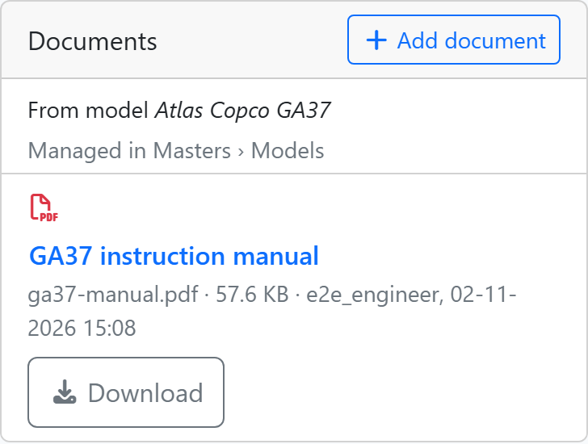
2 · Add a document to a machine
Equipment › the machine › Documents › Add document
Engineer, manager, IT admin · phone or desktop · not on a scrapped machine
- Tap Equipment, then tap the machine.
- In the Documents card, tap Add document.
- Under File, choose the PDF. The dialog shows the largest size allowed.
- Check the Title. It starts as the file's name. Write a name people will know, for example “Compressor 1 test report”.
- Tap Upload. If the button is grey, hover or tap it: it says what is missing (“Choose a file” or “Enter a title”).
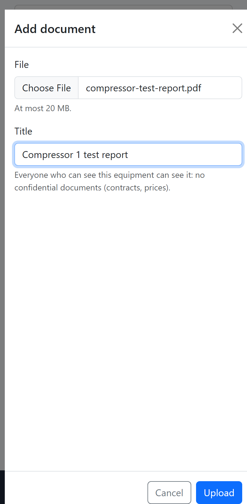
The new row shows the title, the file name, the size, who added it and when. The newest document is first.
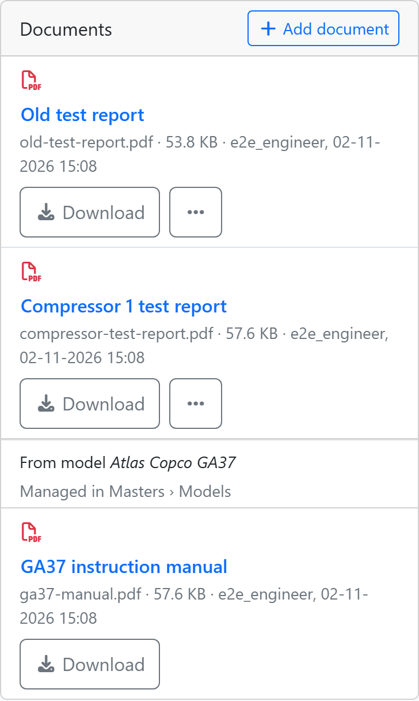
3 · Add a photo
Equipment › the machine › Photos › Add photo
Engineer, manager, IT admin · best on a phone, at the machine
- Open the machine's page. In the Photos card, tap Add photo.
- Under File, a phone offers the camera or the gallery. Take the photo or choose one. It must be JPEG, PNG or WebP.
- Under Title, say what the photo shows, for example “Nameplate”. When the photo has a camera's own name, the field is empty and asks “What does the photo show?”.
- Tap Upload.
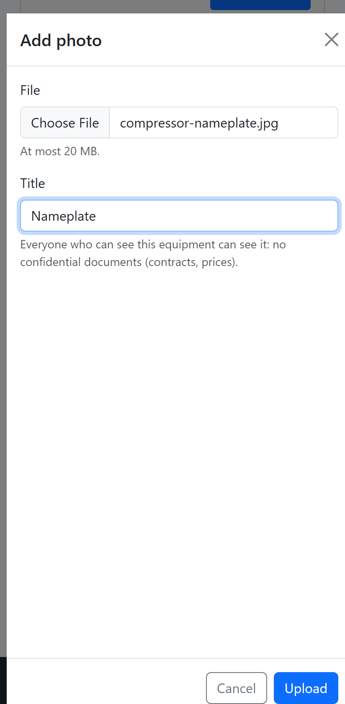
The photo shows as a small picture with its title. Tap it to see it large; the arrows step through the photos.
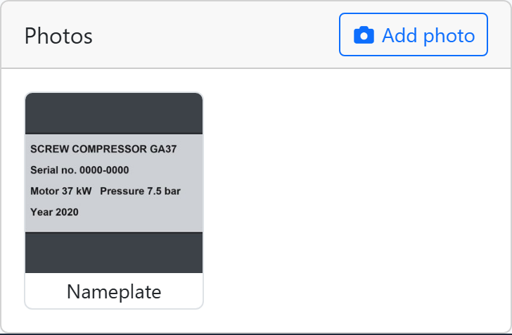
4 · The model's documents
Masters › Models › Documents
Engineer, manager, IT admin · desktop
- Click Masters, then the Models tab.
- On the model's row, click the paperclip button (its tooltip says Documents). The model's Documents and Photos cards open in place.
- Click Add document, choose the PDF, check the Title, click Upload. A photo works the same with Add photo.
- Click Models (the arrow at the top left of the card) to go back to the list.
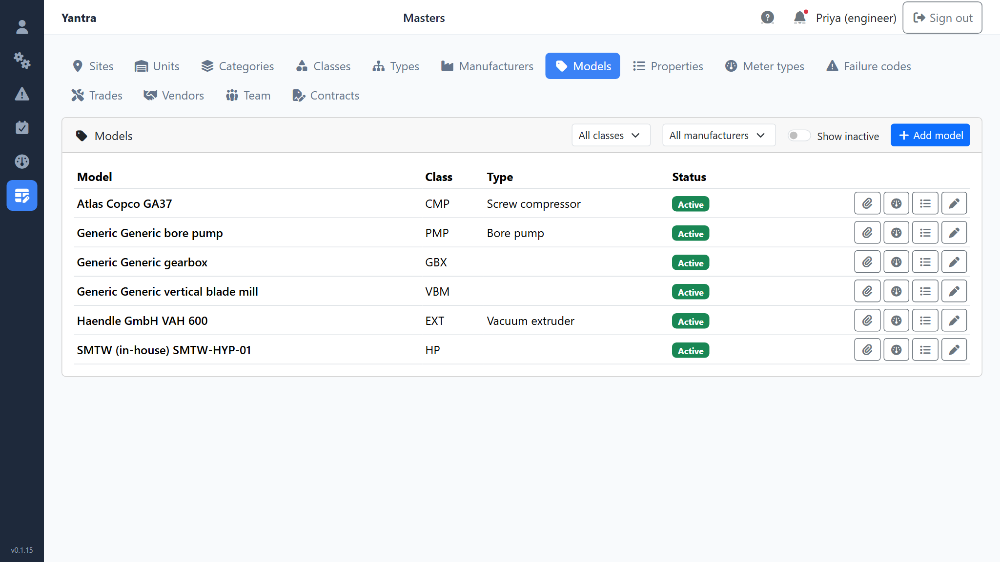
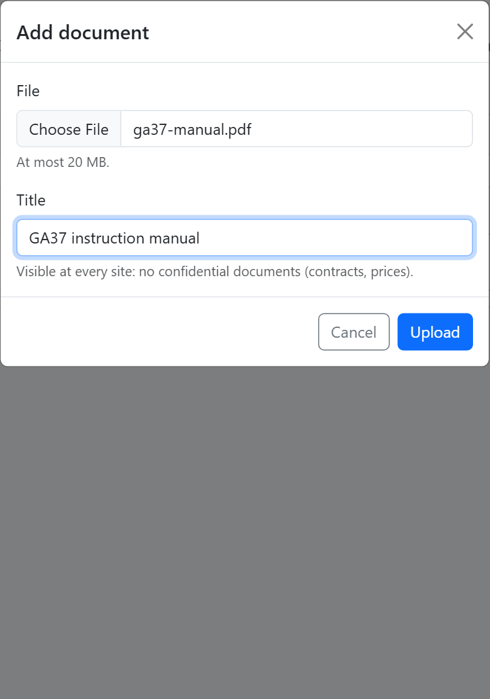
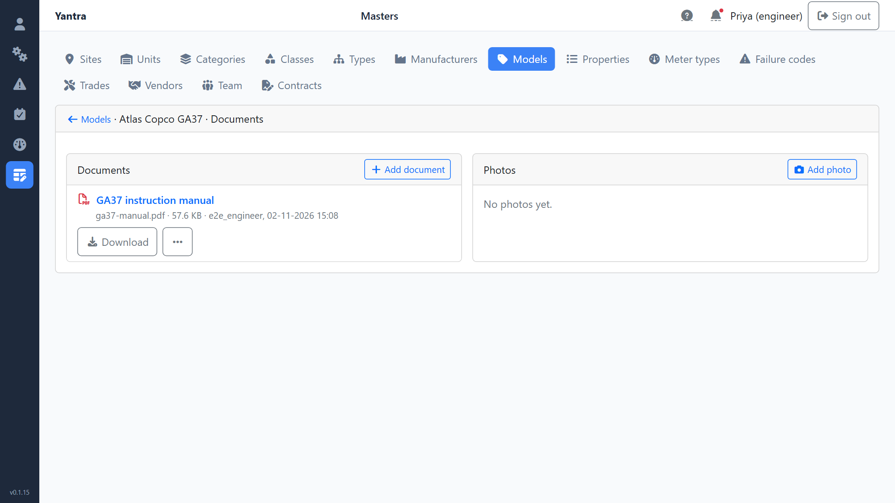
Now open any machine of that model. Its Documents card shows the group From model … under the machine's own documents (see section 2). On the machine you can open and download it; to change or remove it, go back to Masters › Models. When you remove a model's document, the question says: “Remove this document? It disappears from every machine of this model.”
5 · Open, download, rename, remove
One row, four actions
Everyone opens and downloads · engineer, manager and IT admin change · phone or desktop
- Open: tap the title. The PDF opens in a new tab.
- Download: tap Download to keep the file on the phone or the computer.
- Rename: tap the ⋯ button (More actions), then Edit title, change the title, save.
- Remove: tap ⋯, then Remove. The row asks “Remove this document?”. Tap Yes to remove it, or No to keep it.
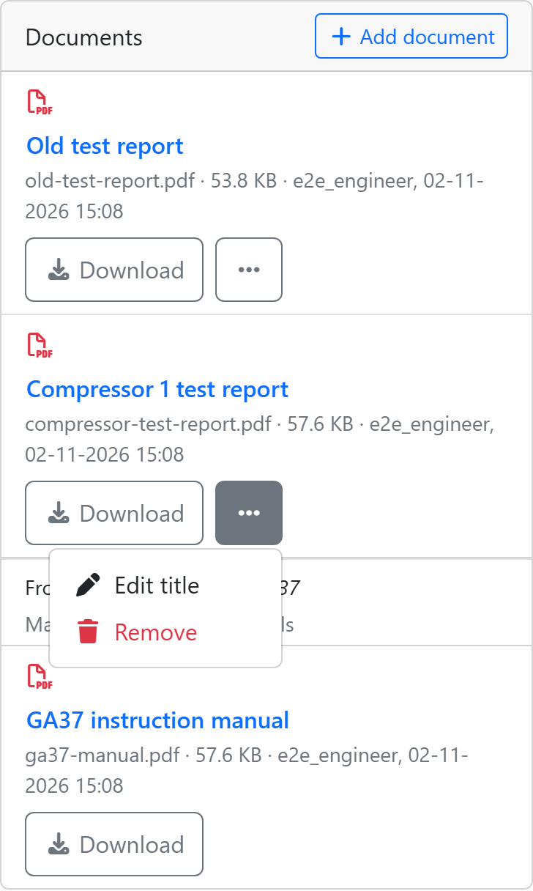
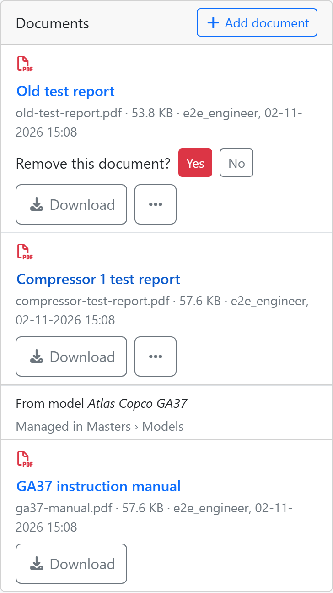
A removed file is not lost. It leaves the machine's page, but a manager or IT admin can bring it back (next section). To replace a file, remove the old one and add the new one.
6 · Removed documents
Settings › Removed documents
Manager, IT admin · desktop
- Click Settings. Find the Removed documents card.
- Search by machine code, model, ticket, improvement, lesson number, contract, title or file name, or choose Documents or Photos in the list beside the search.
- Click Restore to put the file back where it was. Restore is grey when the owner cannot be changed any more (a scrapped machine, a closed ticket); point at it to read why.
- Click Delete for good to erase the file. The row asks “Delete for good? The file cannot be recovered.” Click Delete for good again to confirm, or No.
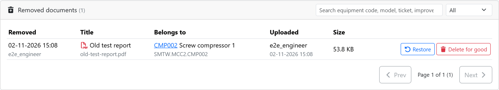
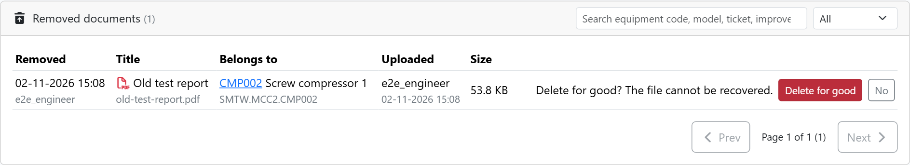
7 · The rules
What may be uploaded, and by whom
| Rule | What it says |
|---|---|
| File type | Documents are PDF only. Photos are JPEG, PNG or WebP. |
| iPhone photos | An iPhone photo in HEIC form is refused. Set Camera › Formats › Most Compatible on the iPhone, or share the photo as JPEG. |
| Size | The largest file is set in Settings › Uploads, “Largest file for documents and photos”. It starts at 20 MB. IT admin can change it, from 1 to 100 MB. A larger file is refused before it is sent. |
| Who adds to a machine or a model | Engineer, manager and IT admin. Everyone else can open and download. |
| Who restores or erases | Manager and IT admin. |
Documents and photos also live in other places, each with its own rule:
- Tickets: photos are added while raising a ticket or on the ticket's page, and a technician can add documents to a ticket.
- Countermeasures of an improvement, and one-point lessons: the person who owns them, or an engineer, adds files.
- Contracts: documents such as a quote or an agreement. Only managers see a contract's documents, because they can show a price.
The shots on this page were taken on a test copy of Yantra with sample data.